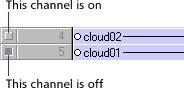
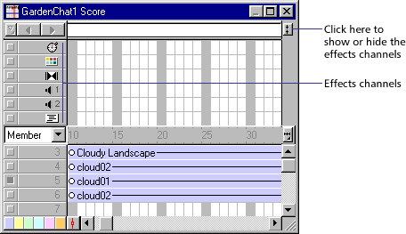

Using Director > Director basics > Introducing the Director workspace > Turning on and off channels
Using Director > Director basics > Introducing the Director workspace > Turning on and off channels |
Turning on and off channels
To hide the contents of any channel on the Stage, or to disable the contents if they are not visible sprites, you use the button to the left of the channel. When you turn off a special effects channel, the channel's data has no effect on the movie. You should turn off Score channels when testing performance or working on complex overlapping animations. Turning off a channel has no effect on projectors or Shockwave.
To turn off a Score channel:
Click the gray button to the left of the channel. A darkened button indicates that the channel is off.

To turn multiple Score channels off and on:
Press Alt (Windows) or Option (Macintosh) and click a channel that is on to turn all the other channels off, or click a channel that is off to turn the other channels on.
To show or hide the special effects channels:
Click the Hide/Show Effects Channels button in the upper right corner of the Score to change the display.
